목동 상가주택 대수선 공사
노후 적벽돌 건물의 구조와 설비, 단열과 외관을 전면 개선한 대수선 프로젝트
오래된 적벽돌 상가주택을 새로운 모습으로
이번 프로젝트는 노후된 적벽돌 상가주택의 기능과 외관을 함께 개선한 대수선 공사입니다. 기존 건물은 옥상 난간과 옥탑, 주택층 바닥과 설비, 외벽 마감 등 여러 부분에서 전반적인 정비가 필요한 상태였습니다.
단순히 외관만 바꾸는 공사가 아니라 철거를 통해 건물의 기존 상태를 확인하고, 옥상과 내부 공간을 새롭게 구성한 뒤 배관과 계단, 단열과 외벽 마감까지 공정별로 차근차근 완성했습니다.

옥상과 옥탑부터 불필요한 구조를 정리했습니다
공사 전 옥상에는 사선 형태의 기존 난간과 활용도가 낮은 옥탑 구조가 남아 있었습니다. 새로운 옥상 디자인과 실용적인 공간 구성을 위해 기존 난간을 철거하고, 옥탑 바닥까지 단계적으로 해체했습니다.
철거 과정에서는 기존 구조와 주변 마감 상태를 확인하면서 이후 공정에 필요한 바탕을 안전하고 정돈된 상태로 만드는 데 집중했습니다.
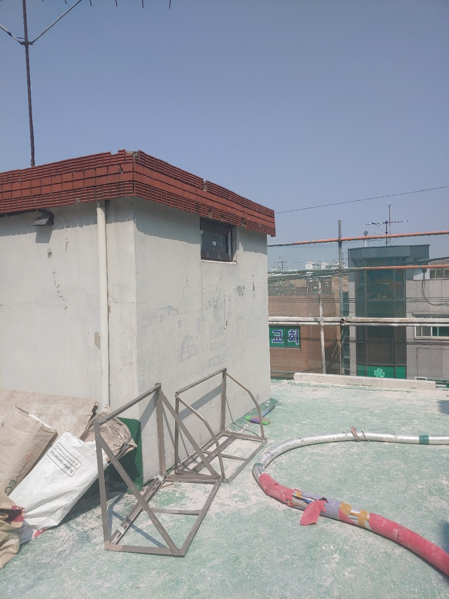
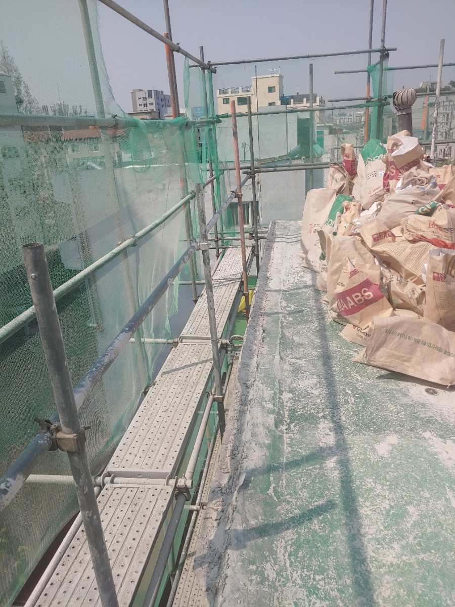
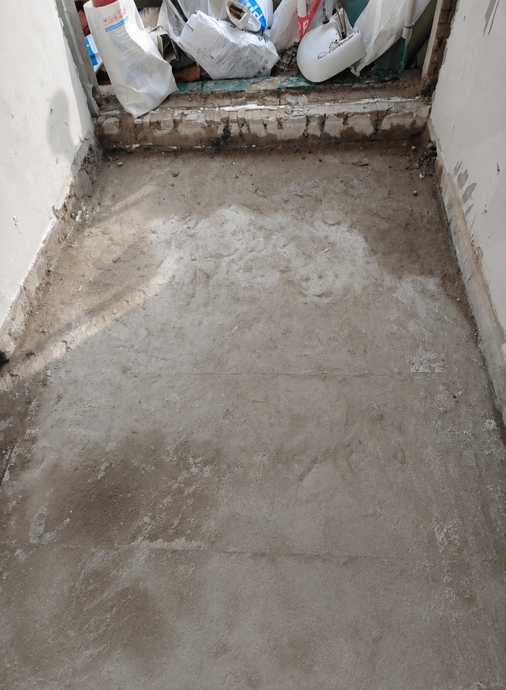
주택층 바닥을 철거해 기존 설비 상태를 확인했습니다
주택으로 사용되는 층은 기존 바닥을 철거해 내부 구조와 설비 상태를 직접 확인했습니다. 마감재 아래에 가려져 있던 온수 배관과 노후 부위를 드러낸 뒤, 새 배관과 바닥 구성을 위한 기초 작업을 진행했습니다.
철거는 새로운 마감을 위한 준비 단계이면서, 향후 누수와 유지관리 문제를 줄이기 위한 중요한 점검 과정이기도 합니다.
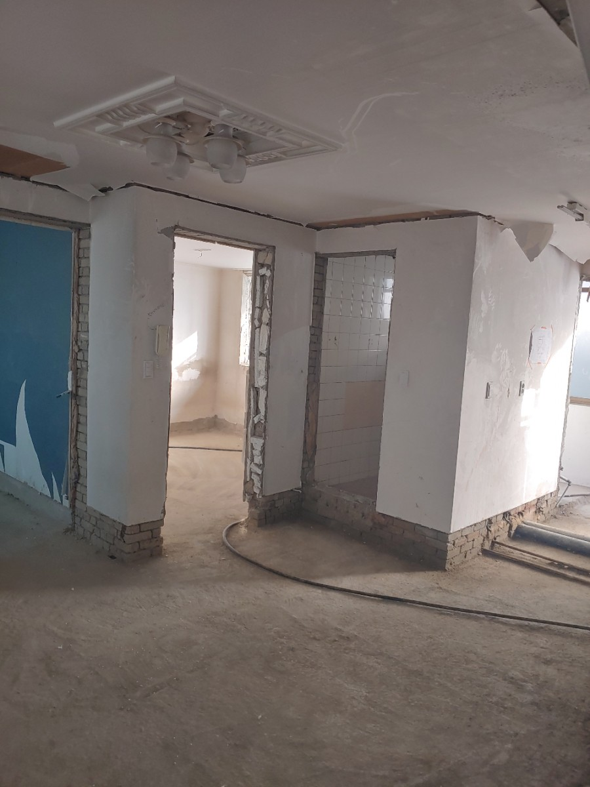
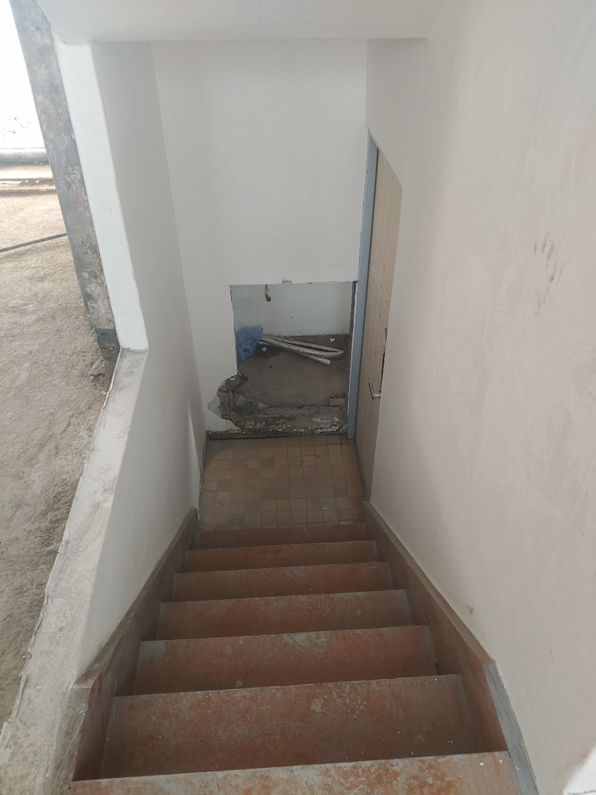

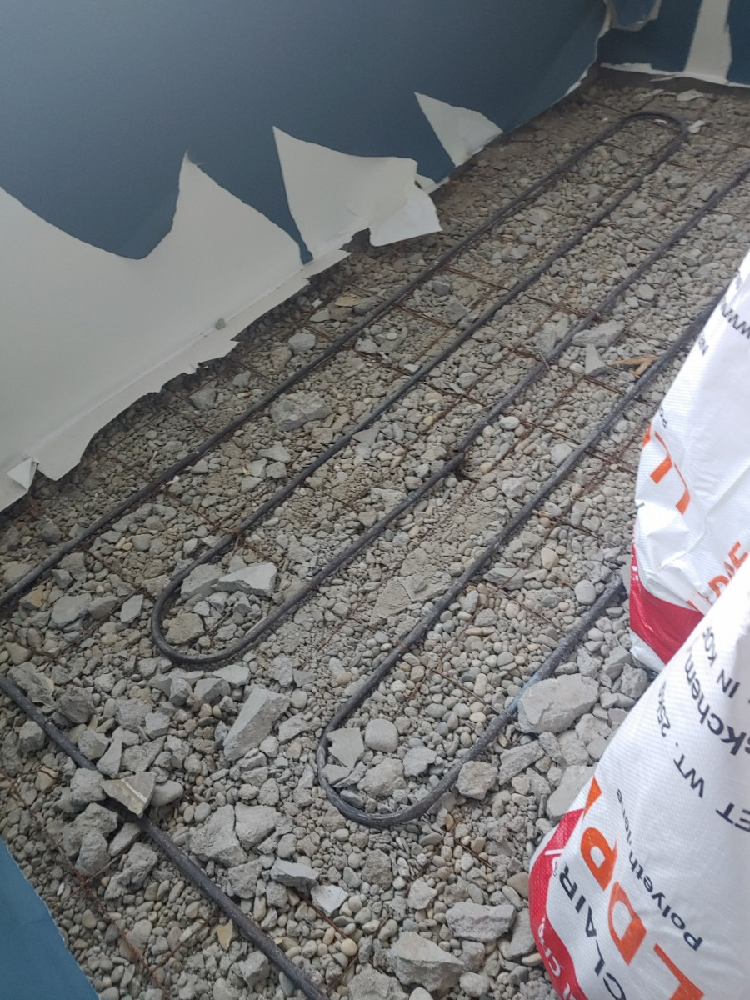
철거한 난간 자리에 새로운 디자인을 쌓았습니다
기존 사선 난간을 철거한 자리에는 네모 박스 형태의 디자인 블록을 쌓아 옥상의 안전성과 건물 입면의 조형성을 함께 높였습니다. 반복되는 사각 패턴은 외부 시선을 적절히 가리면서도 빛과 공기가 통할 수 있도록 계획했습니다.
옥탑방 전면에는 폴딩도어를 설치해 개방감을 확보하고, 필요에 따라 내부와 옥상을 유연하게 연결할 수 있는 실용적인 공간으로 구성했습니다.
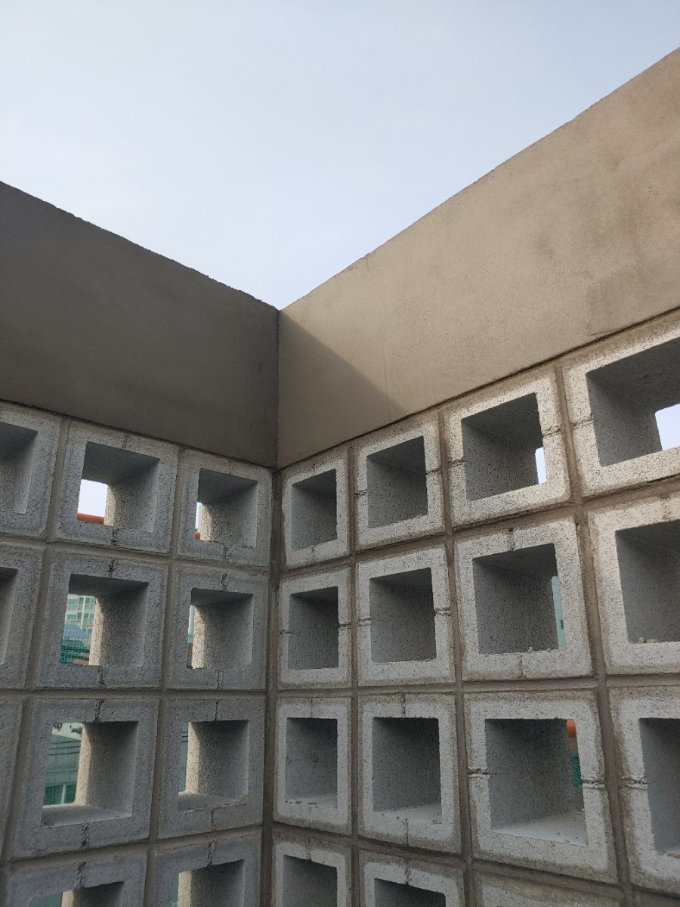

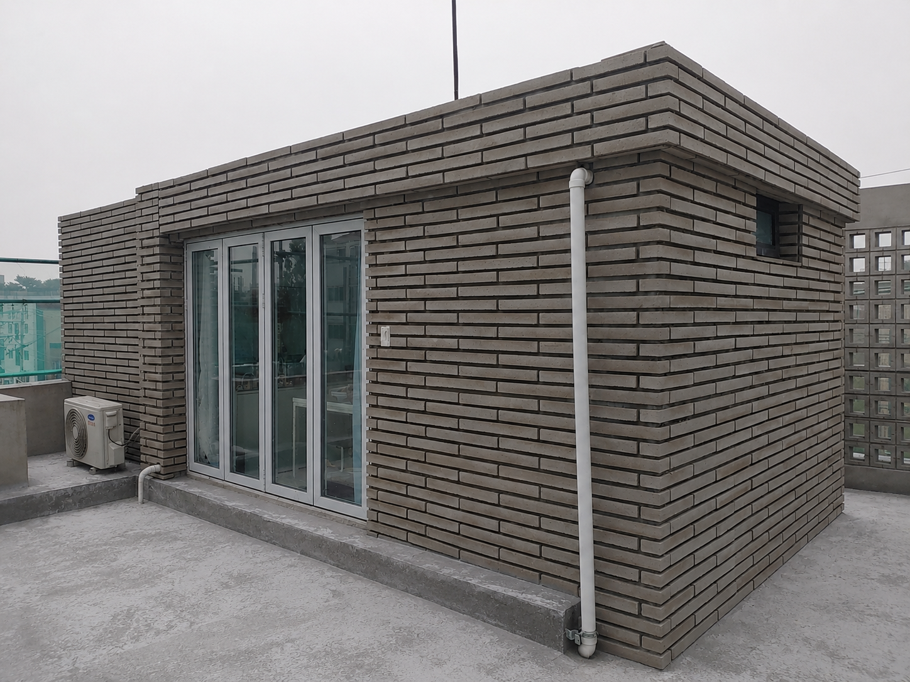
새 배관과 계단으로 내부 사용성을 개선했습니다
철거를 마친 주택층에는 새로운 배관을 설치해 설비를 정비하고, 바닥 마감 이후에도 안정적으로 사용할 수 있도록 배관 경로와 연결 상태를 확인했습니다.
기존 동선과 공간 조건에 맞춰 계단도 새롭게 설치했습니다. 단순히 형태만 바꾸는 것이 아니라 오르내리기 편한 높이와 폭, 마감 이후의 사용성을 함께 고려해 시공했습니다.
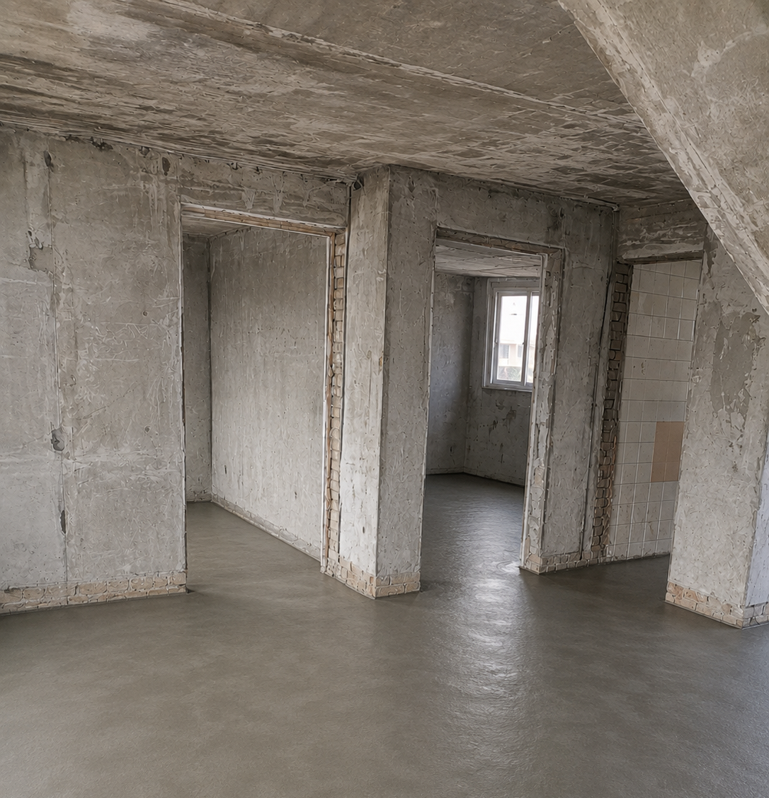
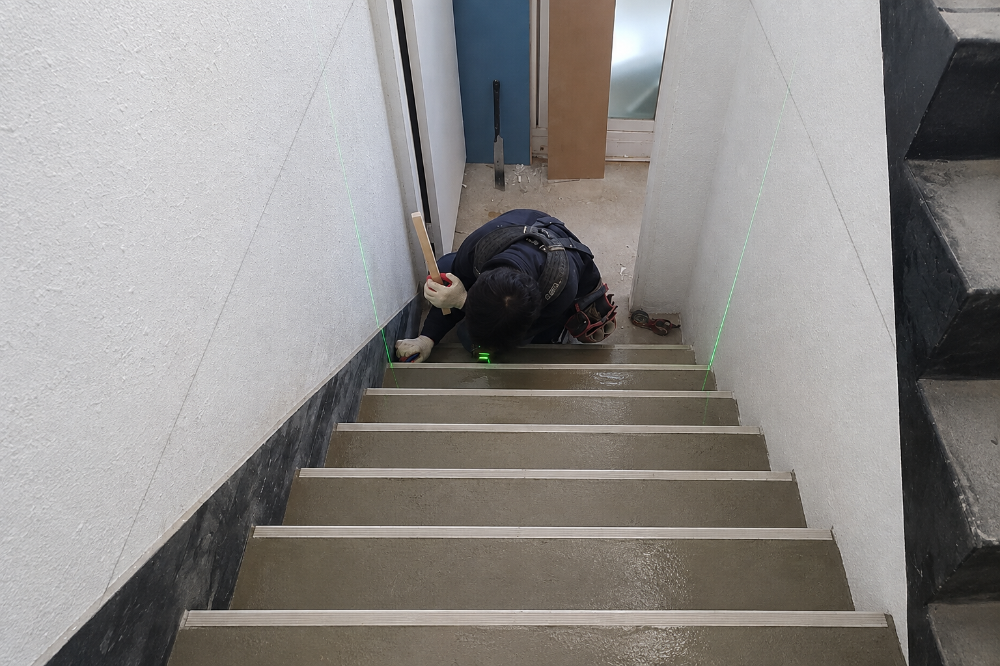
외단열 이후 벽면 마감으로 새로운 입면을 완성했습니다
기존 적벽돌 외관은 외단열 공정을 거쳐 건물의 단열 성능을 보완했습니다. 단열재 시공 후에는 벽면 바탕을 정리하고 마감재가 안정적으로 시공될 수 있도록 면과 모서리, 창호 주변을 세심하게 다듬었습니다.
외벽 마감은 건물의 첫인상을 결정하는 동시에 단열재와 구조체를 보호하는 중요한 공정입니다. 각 면의 수평과 수직, 접합부와 개구부 주변 디테일을 반복 점검하며 전체 입면이 균형 있게 보이도록 작업했습니다.

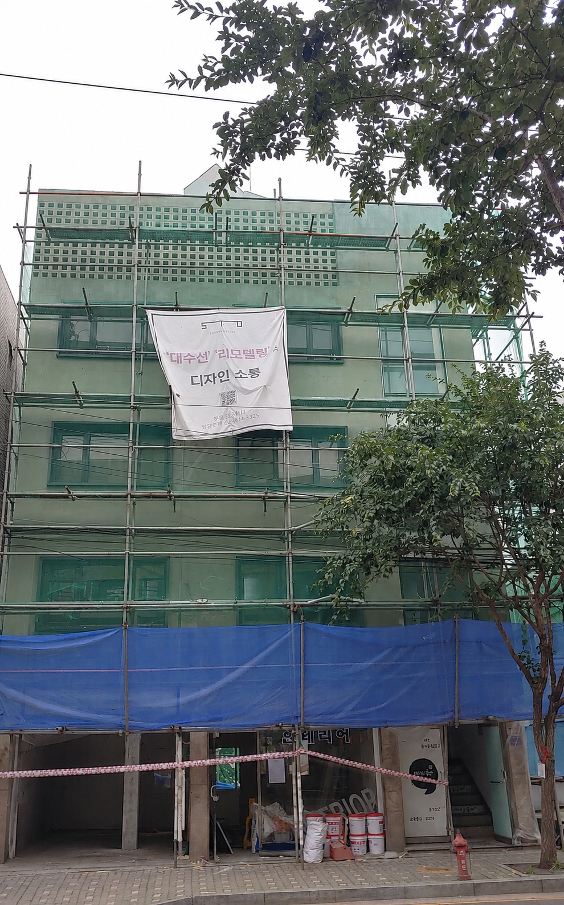

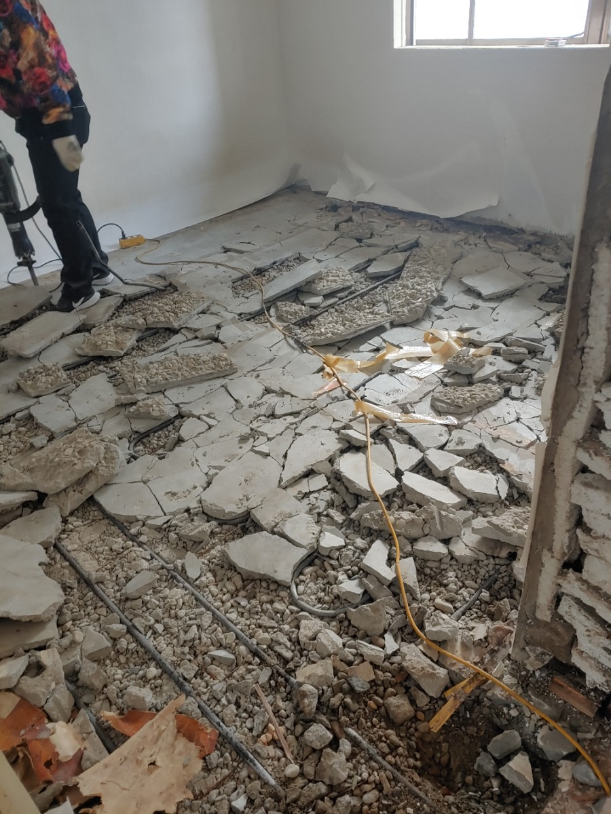
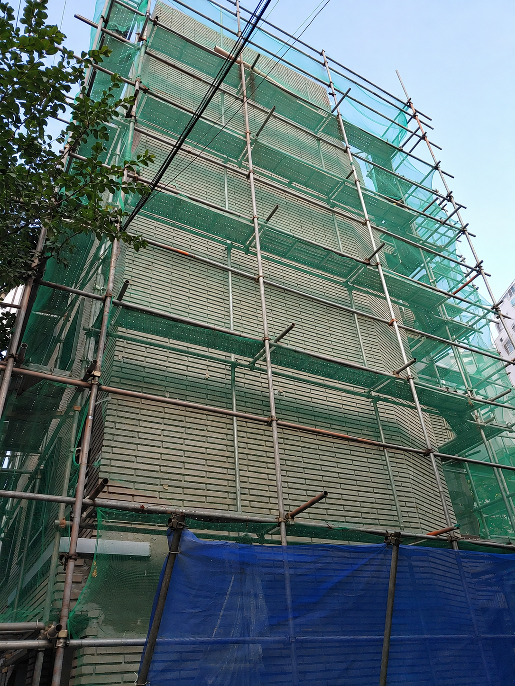
구조와 성능, 외관이 함께 달라진 대수선 완공
철거부터 옥상 디자인 블록과 폴딩도어, 주택층 신규 배관과 계단, 외단열과 외벽 마감까지 모든 공정을 마친 뒤 건물은 새로운 모습으로 완성되었습니다.
기존 적벽돌 건물의 흔적을 정리하고 간결한 입면과 새로운 창호, 옥상 디자인 요소를 조화시켜 현대적인 외관으로 변화시켰습니다. 보이는 디자인뿐 아니라 실제 생활에 필요한 설비와 동선, 단열 성능까지 함께 개선한 프로젝트입니다.
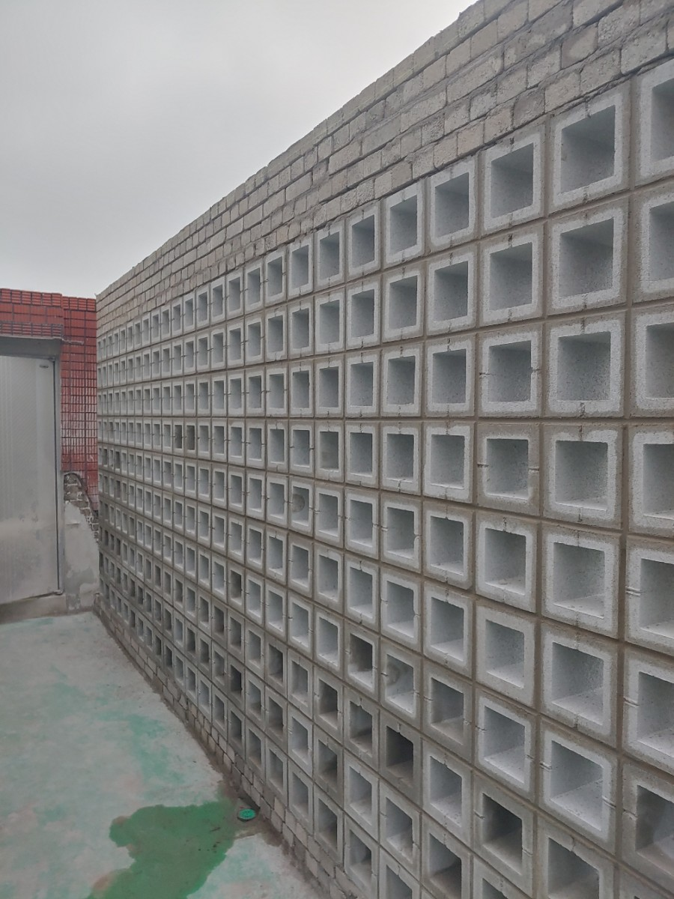
이번 대수선 공사의 핵심
기존 구조를 정확히 확인한 철거
옥상 난간과 옥탑 바닥, 주택층 바닥과 온수 배관을 순서대로 철거해 새 공정을 위한 바탕을 만들었습니다.
디자인과 활용도를 높인 옥상
사선 난간 대신 디자인 블록 난간을 시공하고 옥탑방에 폴딩도어를 설치해 개방감과 실용성을 높였습니다.
신규 배관과 계단 설치
철거 후 새 배관과 계단을 설치해 주택층의 생활 편의성과 유지관리성을 개선했습니다.
외단열과 벽면 마감
외벽 단열 성능을 보완하고 세심한 벽면 마감으로 건물의 새로운 입면을 완성했습니다.
오래된 건물의 새로운 가능성을 함께 찾아보세요.
상가주택과 노후 건물의 대수선·리모델링을 상담부터 디자인, 시공과 준공까지 함께합니다.